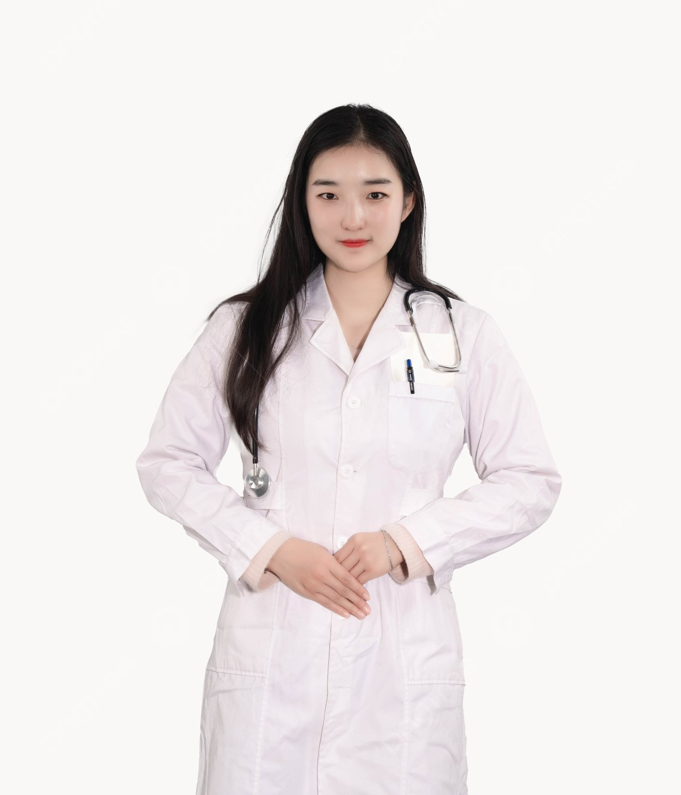
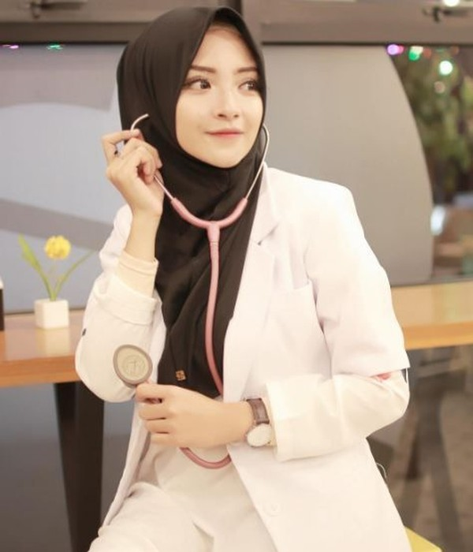

Tim Dokter
Berikut adalah Tim Dokter yang luar biasa, masing-masing adalah spesialis di bidangnya

drg. Jessyca, Sp. Ort
Ortodontis

drg. Diva. F Ikenasya
Dokter Gigi

drg. M. Aryaditha, Sp. BM
Bedah Mulut